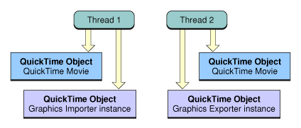
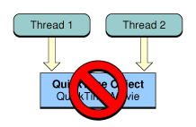
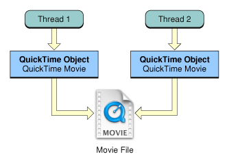
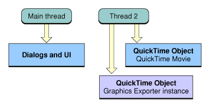
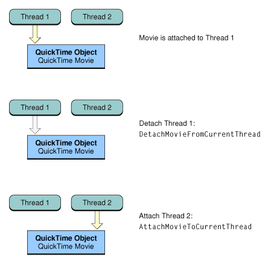
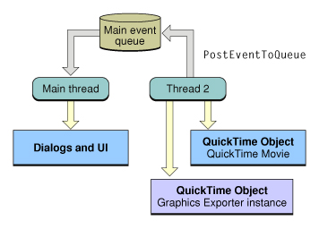

| ADC Home > Reference Library > Technical Notes > QuickTime > Cocoa > | |
|
IntroductionQuickTime's heritage on traditional Mac OS (System 6.0.8 through Mac OS 9) meant that many of the original APIs were designed to be called from a single thread. Mac OS X, however, introduced Macintosh developers to the power of true multiprocessing -- the ability to perform multiple simultaneous operations in multiple applications at once. Mac OS X also removed some traditional Mac OS limitations regarding the types of tasks that could be performed with multiple threads from within any single application. Why is this important when developing a QuickTime application? To answer this question, let's suppose that all processing operations were instantaneous. If this were true, all operations could be run in theory, from the same thread. In reality however, many common operations can in fact take time. When these processor intensive operations delay application responsiveness by blocking the user interface, or by limiting the number of tasks that can be performed at once, the user experience suffers. Your application can benefit whenever you can perform a QuickTime operation that doesn't require any direct user interaction and can run regardless of whatever is happening on the main thread. As an example, think about movie compression -- a somewhat time consuming processes. Maybe your application would like to compress two movies at the same time, or play one movie while compressing another. These types of QuickTime operations prior to Mac OS X 10.3 may have introduced unacceptable processing delays or lack of application responsiveness. Now consider moving this operation from the main thread (the user interface blocking thread) to a background thread, or even a number of background threads. Your application could then compress and export multiple movies in different formats all at the same time while playing another movie or performing some other task all without blocking the user interface. The design goal of QuickTime's multithreading support for Mac OS X 10.3 and later specifically addresses this problem. QuickTime will now allow developers to move processor-intensive tasks to background threads, freeing up the main thread thereby improving an application's speed, responsiveness and overall performance. Thread-safe OperationsMac OS X 10.3 and later now allows you to perform the following QuickTime operations from background threads:
These types of operations can take up a great deal of processing time thus causing CPU bottlenecks and user interface responsiveness problems. They are ideal to move to background threads. IMPORTANT: Movie playback has always avoided blocking the user interface. It has been this way since QuickTime 1.0 and continues to be true. Before discussing what can be made thread-safe, we need to define a few terms; QuickTime Movie, Movie file, QuickTime object and Disjoint.
Note: It is important to understand the above distinction between a QuickTime Movie (the data structure in memory) and a movie file (the file on disk). What can be made thread-safeQuickTime applications working with the following toolbox managers can be made thread-safe:
Independent threads in your application can safely use logically disjoint sets of QuickTime objects from multiple threads. If one thread has its own unique set of QuickTime objects and another thread has its own unique set, then any operation performed on these objects can be considered thread-safe. The two threads must have no QuickTime objects in common. See Figure 1. For example, two background threads could import a .DV stream then step through each Movie using APIs such as Figure 1: Disjoint access is thread-safe.  Conversely, if two threads access the same QuickTime object or objects simultaneously, then any operation performed on these objects is not considered thread-safe. The threads manipulating these objects are required to perform their own synchronization (or locking) around any object access. This is no different from any unprotected (or global) data structure that needs to be accessed from multiple threads. Some kind of thread protection must be implemented before allowing simultaneous access. See Figure 2. Figure 2: Simultaneous access is not thread-safe.  Note: POSIX pthread APIs provide two thread synchronization primitives; mutexs and condition variables. Mutexes are simple locks and can be used to control access to some QuickTime object like a Graphics Importer Instance or Decompression Sequence shared between two background threads. Mutexes have only two states, locked and unlocked. POSIX condition variable can be used with mutexes to allow threads to block and wait for a signal from another thread. When the signal arrives, the thread that's blocked can then attempt to grab the lock on the related mutex. Multiprocessing Services also provides thread synchronization and signaling mechanisms. See the References section at the end of this Technical Note for more information regarding pthreads and Multiprocessing Services. An exception occurs when working with the file system. The operating system routines that implement access to files are all thread-safe. Because the file system is designed for multithreaded access, independent threads can have two QuickTime objects referring to the same file. It is perfectly fine to have two threads share the same movie file for reading. Two threads can have their own separate QuickTime Movies referencing the same movie file while performing read operations. For example, these threads could render or display different parts of the Movie at the same time, without any problems. However, it may not be safe for one of these threads to be writing to the movie file while the other thread is reading from it without some locking. See Figure 3. Figure 3: Sharing the same movie file for reading is thread-safe.  The key point in this discussion is that your application should not allow more than one thread to work on the same QuickTime object at same time if you want to ensure thread-safety. It is your responsibility as the caller to ensure that this is the case. What is not thread-safeThe following Toolbox managers are not thread safe; QuickTime applications cannot use their services from background threads:
Additionally, the following Movie Toolbox functionality is not available from background threads:
The Human Interface Toolbox provides user interface elements for applications. Working with the HIToolbox however is not thread-safe. Additionally, it is the main threads run loop which normally receives all the events generated by the user. It doesn't matter if you are working with QuickTime in the Carbon or Cocoa environment, user interface elements must stay on the main thread and it is your responsibility as the caller to avoid creating or presenting a Dialog or Window on a background thread. QuickTime user interface elements include the Standard Compression Dialog, Dialogs presented by APIs such as Figure 4: Keep all user interface on the main thread.  Working with the Resource Manager is also not thread-safe, because its APIs involve the use of a global state called the "resource chain". The resource chain is a list of open resource file. It is effectively an implicit parameter passed to most of the Resource Manager APIs. This means you should not call APIs such as The Movie Toolbox provides the functionality that allows you to import, play, render, create, edit, and store time-based data. Movies cannot be played on background threads, therefore calling Movie Toolbox playback APIs such as The Movie Controller (and Carbon Movie Control which you can think of in terms of the more familiar HIToolbox Control) provides a whole suite of functionality when working with QuickTime Movies; playback, editing, user interface, interactive event dispatching to name a few. The Movie Controller however is not thread-safe and must only be created and used from the main thread. Advice for Application DevelopersPerforming some high-level operation such as opening a movie file or converting an image from one format to another may involve a number of lower-level components such as Movie Importers, Data Handlers, Image Decompressors and so on. These components may, or may not be thread-safe and often the application doesn't have any way of knowing which lower-level components will be invoked until the operation has started. This means that some media files cannot be opened and certain media conversions cannot be performed safely from background threads. Your application will need to adopt a strategy to deal with this possibility. Mac OS X 10.3 includes a number of thread-safe and non-thread-safe components. For example, while the most widely used still image formats such as JPEG, PNG and TIFF have been made thread-safe MacPaint has not. You can use this to your advantage by having a very well defined case to test how well your code handles dealing with media requiring components that are not thread-safe. In most cases you will need to move the QuickTime object to the main thread and continue the operation. The threads import and export samples in the Scenarios and Sample Code section of this document demonstrate this technique. Calling EnterMoviesOnThreadApplications using QuickTime on background threads should now call The
Calling Your application can receive a Listing 1: EnterMoviesOnThread. OSErr EnterMoviesOnThread(UInt32 inFlags) EnterMoviesOnThread is used to indicate to QuickTime that an application will be using QuickTime APIs on the current thread. inFlags - flags indicating how the executing thread will be using QuickTime. Pass 0 for the default options. Flags: kQTEnterMoviesFlagDontSetComponentsThreadMode = 1L << 0 Discussion: Applications should call EnterMoviesOnThread on threads they create. If EnterMoviesOnThread is not called on a spawned preemptive thread when calling QuickTime APIs, the global QuickTime state will be shared with the main thread. By default, EnterMoviesOnThread will set the current Component Manager thread mode according to state of QuickTime's thread sharing policy. If the QuickTime state is private to the thread, the mode will be set to kCSAcceptThreadSafeComponentsOnlyMode. If the QuickTime state is shared between the thread calling EnterMoviesOnThread and the main thread, then the mode will be set to kCSAcceptAllComponentsMode. By including the kQTEnterMoviesFlagDontSetComponentThreadMode flag in the call to EnterMoviesOnThread, no change to the thread mode will be made leaving it as it was before the call. Setting the thread mode is a convenience provided by EnterMoviesOnThread and can be done directly using CSSetComponentsThreadMode. You can also get the current thread mode by calling CSGetComponentsThreadMode. The thread mode set by calling EnterMoviesOnThread or CSSetComponentsThreadMode is thread-local, not process-global. The first call to EnterMoviesOnThread will change the Component Manager thread mode unless the kQTEnterMoviesFlagDontSetComponentsThreadMode flag is passed. All subsequent calls will leave the Component Manger thread mode unaffected. Multiple calls to EnterMoviesOnThread can be made on a single thread. An example may be an application that spawns a thread and calls EnterMoviesOnThread. The application then calls library code that also uses QuickTime. The library code, which is unable to predict if the caller initialized QuickTime, will call also call EnterMoviesOnThread. This matches the typical usage of EnterMovies today by libraries. Listing 2: ExitMoviesOnThread. OSErr ExitMoviesOnThread(void) ExitMoviesOnThread is used to indicate to QuickTime that the application will no longer be using QuickTime APIs on the current thread. Discussion: ExitMoviesOnThread returns an appropriate operating system or QuickTime error if the operation couldn't be completed. This might occur because a previous call to EnterMoviesOnThread was not made. ExitMoviesOnThread should be called before exiting from a background thread that uses QuickTime and undoes the setup performed by EnterMoviesOnThread. Each EnterMoviesOnThread call should be matched with an ExitMoviesOnThread. ExitMoviesOnThread should not be called on a thread without a previous call to EnterMoviesOnThread. Note that after the last ExitMoviesOnThread is called on a background thread, subsequent calls to QuickTime APIs without calling EnterMoviesOnThread first will result in threads sharing the main thread's state just as though the application didn't use the EnterMoviesOnThread / ExitMoviesOnThread pair. This is for compatibility. Not calling ExitMoviesOnThread while not fatal can potentially result in resource leaks. Callers should therefore bracket all QuickTime calls on secondary threads between an initial EnterMoviesOnThread and final ExitMoviesOnThread. Moving QuickTime objects between threadsIn some cases, you may need to move a QuickTime object from one thread to another. When working with instances of Graphics Importers and Graphics Exporters, you will need to manage this by implementing your own locking mechanism and ensuring that the QuickTime object (the Component Instance in this case) is only being called from one thread at a time. QuickTime Movies on the other hand must know which thread they belong to at any given time. There are two APIs that must be called whenever moving a QuickTime Movie from one thread to another. You must first detach a Movie from the old thread then attach it to the new thread. When passing a QuickTime Movie from one thread to another, call Figure 5: Migrating a QuickTime Movie between threads.  Obtaining a Movie reference using any of the Calling Listing 3: AttachMovieToCurrentThread. OSErr AttachMovieToCurrentThread(Movie m) m - the Movie for this operation. Your application obtains this Movie identifier from such functions as NewMovie, NewMovieFromFile, and NewMovieFromHandle. Returns noErr if there is no error or componentNotThreadSafeErr if the Movie cannot be attached to the current thread. Discussion: Attaches a movie to the current thread. Listing 4: DetachMovieFromCurrentThread. OSErr DetachMovieFromCurrentThread(Movie m) m - the movie for this operation. Your application obtains this movie identifier from such functions as NewMovie, NewMovieFromFile, and NewMovieFromHandle. Returns noErr if there is no error. Discussion: Detaches a Movie from the current thread. Dealing with CallbacksA number of QuickTime APIs allow for the installation of callback routines, the most common being asynchronous completion callbacks and progress callbacks. Asynchronous completion callbacks have always been called from special threads and must be thread-safe. These threads are not the same thread that is performing the operation; this behavior has not changed in Mac OS X 10.3. Other QuickTime callbacks however are called from the same thread performing the operation. This is particularly important when implementing your own progress callbacks containing some user interface elements. A progress callback called from a background thread is executing on that thread. It doesn't matter where this code resides in your application or what other functions may be using it, if a callback could be called from a background thread it must be thread-safe. In cases such as this, you may need to re-think your progress callbacks to make them thread-safe. One very useful technique is to use custom carbon events sent from the progress callback on a background thread to a carbon event handler on the main thread. This can be accomplished by using the thread-safe API The API Note: On Mac OS X 10.3.x On Mac OS X 10.4 and greater, Figure 6: Use PostEventToQueue to send custom Carbon Events to the main thread.  IMPORTANT: Don't call When you don't want any Movie progress function use NULL:
Dealing with the Resource ManagerThe Resource Manager is not thread-safe. It is critical to remember that this includes any APIs manipulating resources, the resource chain, or resource maps. However, the one-shot Component Manager calls that return component resources are thread-safe and should be used if your application needs to obtain a public resource from a Component. These include the following APIs:
Listing 5: Using GetComponentPublicResource.
ComponentDescription cd;
ResourceHandle resource = NULL;
Component c = 0;
cd.componentType = MovieExportType;
cd.componentSubType = kAComponentSubType;
cd.componentManufacturer = kAManufacturer;
cd.componentFlags = 0;
cd.componentFlagsMask = 0;
c = FindNextComponent(c, &cd)
if (c) {
err = GetComponentPublicResource(c, 'PICT', 1, &resource);
if (noErr == err) {
// do something with the resource
...
DisposeHandle(resource);
}
}
For more information on these APIs see Ice Floe Dispatch 21 Scenarios and Sample Code(a) Still image import - ThreadsImporter Sample Code ThreadImporter demonstrates importing and displaying still images on separate threads. (b) Still image export - ThreadsExporter Sample Code ThreadsExporter demonstrates importing and exporting still images in different formats on separate threads. (c) QuickTime Movie import - ThreadsImportMovie Sample Code ThreadsImportMovie demonstrates importing and displaying QuickTime Movies on separate threads. (d) QuickTime Movie export - ThreadsExportMovie Sample Code ThreadsExportMovie demonstrates exporting Movies using the QuickTime Movie Export Component on separate threads. (e) Opening a Movie on main thread then migrating a copy of the Movie to a background thread. Listing 8 contains a common code snippet demonstrating how a Movie can be migrated from the main thread to a background thread for some further processing. It's used with the worker functions shown in listings 6 and 7. The function (f) Export a migrated movie from a background thread. Listing 6 opens the QuickTime Movie Export Component, configures it to compress the video using the DV Codec then calls Listing 6: Exporting a Movie on a background thread.
// This worker function performs the Movie Export operation on a background thread
void *DoSomeWorkFunction(void *inWorkerThreadRef)
{
QTAtomContainer exportSettings;
Handle theDataRef;
OSType theDataRefType;
EventRef theEventRef = NULL;
OSStatus status;
WorkerThreadRef worker = (WorkerThreadRef)inWorkerThreadRef;
EnterMoviesOnThread(0);
status = AttachMovieToCurrentThread(worker->theMovie);
require_noerr(status, CantAttachToCurrentThread);
CFStringRef path = CFSTR("/Users/fasteddie/Desktop/testoutput.mov");
status = QTNewDataReferenceFromFullPathCFString(path, kQTNativeDefaultPathStyle,
0, &theDataRef, &theDataRefType);
require_noerr(status, Done);
// open the QuickTime Movie Export component and configure it
ComponentInstance ci = OpenDefaultComponent(MovieExportType, kQTFileTypeMovie);
if (ci) {
SCSpatialSettings ss;
SCTemporalSettings ts;
UInt8 falseSetting = false;
QTAtom videAtom = 0;
QTAtom sptlAtom = 0;
QTAtom tprlAtom = 0;
QTAtom ensoAtom = 0;
QTAtom saveAtom = 0;
QTAtom fastAtom = 0;
ss.codecType = kDVCNTSCCodecType;
ss.codec = NULL;
ss.depth = 0;
ss.spatialQuality = codecHighQuality;
ts.temporalQuality = 0;
ts.frameRate = FixRatio(30, 1); //30L<<16;
ts.keyFrameRate = 0;
// get the defaults and change them - you could keep these around if you want
status = MovieExportGetSettingsAsAtomContainer(ci, &exportSettings);
require_noerr(status, Done);
// video options
videAtom = QTFindChildByID(exportSettings, kParentAtomIsContainer,
kQTSettingsVideo, 1, NULL);
if (videAtom) {
// spatial
sptlAtom = QTFindChildByID(exportSettings, videAtom, scSpatialSettingsType,
1, NULL);
if (sptlAtom) {
status = QTSetAtomData(exportSettings, sptlAtom,
sizeof(SCSpatialSettings), &ss);
}
// temporal
tprlAtom = QTFindChildByID(exportSettings, videAtom, scTemporalSettingsType,
1, NULL);
if (tprlAtom) {
status = QTSetAtomData(exportSettings, tprlAtom,
sizeof(SCTemporalSettings), &ts);
}
}
// we only care about video
// disable export sound
ensoAtom = QTFindChildByID(exportSettings, kParentAtomIsContainer,
kQTSettingsMovieExportEnableSound, 1, NULL);
if (ensoAtom) {
status = QTSetAtomData(exportSettings, ensoAtom, sizeof(falseSetting),
&falseSetting);
}
// turn off save for internet options aka fastStart
saveAtom = QTFindChildByID(exportSettings, kParentAtomIsContainer,
kQTSettingsMovieExportSaveOptions, 1, NULL);
if (saveAtom) {
fastAtom = QTFindChildByID(exportSettings, saveAtom,
kQTSettingsMovieExportSaveForInternet, 1, NULL);
if (fastAtom) {
status = QTSetAtomData(exportSettings, fastAtom, sizeof(falseSetting),
&falseSetting);
}
}
// set 'em
status = MovieExportSetSettingsFromAtomContainer(ci, exportSettings);
require_noerr(status, Done);
// no progress proc - if you do use a custom progress proc remember that it will
// be called on this thread and that you cannot use any user interface
// one approach you could use if you required user interface would be to create
// custom carbon events and post them to a handler installed on the main thread
SetMovieProgressProc(worker->theMovie, NULL, NULL);
// export the movie
ConvertMovieToDataRef(worker->theMovie, 0, theDataRef, theDataRefType,
kQTFileTypeMovie, FOUR_CHAR_CODE('TVOD'),
createMovieFileDeleteCurFile |
createMovieFileDontCreateResFile,
ci);
}
Done:
DetachMovieFromCurrentThread(worker->theMovie);
if (ci) CloseComponent(ci);
if (exportSettings) QTDisposeAtomContainer(exportSettings);
if (theDataRef) DisposeHandle(theDataRef);
CantAttachToCurrentThread:
ExitMoviesOnThread();
worker->threadStatus = status;
CreateEvent(NULL, kEventClassQTThreading, kEventAppCleanUpThreadDroppings, 0,
kEventAttributeNone, &theEventRef);
SetEventParameter(theEventRef, kEventParamThreadData, typeWorkerThreadRef,
sizeof(worker), &worker);
if (theEventRef) {
PostEventToQueue(worker->mainEventQueue, theEventRef,
kEventPriorityStandard);
ReleaseEvent(theEventRef);
}
pthread_exit(NULL);
}
(g) Rendering video to a GWorld and creating a Movie from scratch on a background thread. Listing 7 creates a new Movie and movie file, renders the migrated movie to a Listing 7: Rendering and Creating a Movie on a background thread.
// This worker function renders and creates a new Movie on a background thread
void *DoSomeWorkFunction(void *inWorkerThreadRef)
{
Handle theDataRef;
OSType theDataRefType;
DataHandler theDataHandler = 0;
Movie theNewMovie = NULL;
ImageDescriptionHandle id;
GWorldPtr theGWorld;
PixMapHandle theGWorldPixMap;
unsigned long theGWorldRowBytes;
Ptr baseAddr;
long theDataSize;
Track theTrack;
Media theMedia;
Rect srcRect;
short flags;
OSType whichMediaType = VideoMediaType;
TimeValue movieTime = 0;
TimeValue duration;
EventRef theEventRef = NULL;
OSStatus status;
WorkerThreadRef worker = (WorkerThreadRef)inWorkerThreadRef;
EnterMoviesOnThread(0);
status = AttachMovieToCurrentThread(worker->theMovie);
require_noerr(status, CantAttachToCurrentThread);
CFStringRef path = CFSTR("/Users/fasteddie/Desktop/testoutput.mov");
status = QTNewDataReferenceFromFullPathCFString(path,
kQTNativeDefaultPathStyle,
0,
&theDataRef,
&theDataRefType);
require_noerr(status, Done);
status = CreateMovieStorage(theDataRef, theDataRefType,
FOUR_CHAR_CODE('TVOD'), smSystemScript,
createMovieFileDeleteCurFile |
createMovieFileDontCreateResFile,
&theDataHandler, &theNewMovie);
require_noerr(status, Done);
// get the size of the movie
GetMovieBox(worker->theMovie, &srcRect);
MacOffsetRect(&srcRect, -srcRect.left, -srcRect.top);
// create a GWorld to render the frame into
status = QTNewGWorld(&theGWorld,
k2vuyPixelFormat,
&srcRect,
NULL,
NULL,
0);
require_noerr(status, Done);
// set the GWorld
SetGWorld(theGWorld, NULL);
SetMovieGWorld(worker->theMovie, theGWorld, NULL);
theGWorldPixMap = GetGWorldPixMap(theGWorld);
LockPixels(theGWorldPixMap);
baseAddr = GetPixBaseAddr(theGWorldPixMap);
theGWorldRowBytes = QTGetPixMapHandleRowBytes(theGWorldPixMap);
// get the image description and data size
// NOTE: according to Ice Floe Dispatch 19 Image Descriptions
// for QuickTime Movie files containing uncompressed Y'CbCr video data
// should be version 2 and include a number of required Image Description
// extensions. We don't add any of these for the sake of simplicity
// http://developer.apple.com/quicktime/icefloe/dispatch019.html
status = MakeImageDescriptionForPixMap(theGWorldPixMap, &id);
theDataSize = (**id).dataSize;
// create a new movie track and media
theTrack = NewMovieTrack(theNewMovie,
FixRatio((srcRect.right - srcRect.left), 1),
FixRatio((srcRect.bottom - srcRect.top), 1),
kNoVolume);
status = GetMoviesError();
require_noerr(status, Done);
theMedia = NewTrackMedia(theTrack, VideoMediaType,
kQTSDefaultMediaTimeScale, NULL, 0);
status = GetMoviesError();
require_noerr(status, Done);
// begin the editing session so sample data will be written out to the file
status = BeginMediaEdits(theMedia);
require_noerr(status, Done);
// for the first frame, include the frame we are currently on
flags = nextTimeMediaSample | nextTimeEdgeOK;
whichMediaType = VideoMediaType;
Handle theSampleData = NewHandle(theDataSize);
if (MemError() || NULL == theSampleData) goto Done;
while (1) {
// get the next frame of the source movie
// skip to the next interesting time
GetMovieNextInterestingTime(worker->theMovie,
flags,
1,
&whichMediaType,
movieTime,
0,
&movieTime,
&duration);
status = GetMoviesError();
require_noerr(status, Done);
if (-1 == movieTime) break;
// set the time for the frame
SetMovieTimeValue(worker->theMovie, movieTime);
// draw the frame into the GWorld
MoviesTask(worker->theMovie, 0);
status = GetMoviesError();
require_noerr(status, Done);
// mess with the luma subtracting 25 from each Y
// value clamping at 16 the min value (25+16 = 41)
// CbYCrY 8-bits each component pixels 0-1
// see Ice Floe Dispatch 19
// http://developer.apple.com/quicktime/icefloe/dispatch019.html
UInt32 height = srcRect.bottom;
Ptr nextScanLine = baseAddr;
while (height--) {
UInt32 width = theGWorldRowBytes >> 1;
UInt8 *thePixPtr = (UInt8 *)nextScanLine;
while (width--) {
UInt8 Y = thePixPtr[1];
Y = ((Y <= 41) * 16) | ((Y - 25) * !(Y <= 41));
thePixPtr[1] = Y;
thePixPtr += 2;
}
nextScanLine += theGWorldRowBytes;
}
// add the media sample to the movie
PtrToXHand(baseAddr, theSampleData, theDataSize);
status = AddMediaSample(theMedia,
theSampleData, // the video sample
0, // no offset into data
theDataSize,
60, // frame duration
(SampleDescriptionHandle)id,
1, // one sample
0, // self-contained samples
NULL);
require_noerr(status, Done);
flags = nextTimeMediaSample;
}
// end the media editing session
status = EndMediaEdits(theMedia);
require_noerr(status, Done);
// add the media to the track
status = InsertMediaIntoTrack(theTrack, 0, 0, GetMediaDuration(theMedia),
fixed1);
require_noerr(status, Done);
status = AddMovieToStorage(theNewMovie, theDataHandler);
Done:
SetMovieGWorld(worker->theMovie, NULL, NULL);
// something messed up so delete the file
if (status && theDataHandler) {
DataHDeleteFile(theDataHandler);
}
if (theDataRef) DisposeHandle(theDataRef);
if (theDataHandler) CloseMovieStorage(theDataHandler);
if (id) DisposeHandle((Handle)id);
if (theSampleData) DisposeHandle(theSampleData);
if (theNewMovie) DisposeMovie(theNewMovie);
if (theGWorld) DisposeGWorld(theGWorld);
DetachMovieFromCurrentThread(worker->theMovie);
CantAttachToCurrentThread:
worker->threadStatus = status;
ExitMoviesOnThread();
CreateEvent(NULL, kEventClassQTThreading, kEventAppCleanUpThreadDroppings,
0, kEventAttributeNone, &theEventRef);
SetEventParameter(theEventRef, kEventParamThreadData, typeWorkerThreadRef,
sizeof(worker), &worker);
if (theEventRef) {
PostEventToQueue(worker->mainEventQueue, theEventRef,
kEventPriorityStandard);
ReleaseEvent(theEventRef);
}
pthread_exit(NULL);
}
Listing 8: Do_SomeWorkOnSeparateThread.
// Worker thread struct we pass around
typedef struct {
SInt32 refCount;
pthread_t workerThread;
Movie theMovie;
EventQueueRef mainEventQueue;
OSStatus threadStatus;
} WorkerThread, *WorkerThreadRef;
// Our custom Carbon event type
enum {
kEventClassQTThreading = 'QTTH',
kEventAppCleanUpThreadDroppings = 'clup',
kEventParamThreadData = 'thrd',
typeWorkerThreadRef = 'thrd' // WorkerThreadRef
};
// code required to install our Carbon event handler
// this snippet could reside in a larger initialize function that installs
// a minimum set of Carbon event handlers, possibly before calling
// RunApplicationEventLoop()
...
EventTypeSpec eventType[] = {{kEventClassQTThreading,
kEventAppCleanUpThreadDroppings}};
status = InstallApplicationEventHandler(Handle_CleanUpThreadData,
GetEventTypeCount(eventType),
eventType, NULL, NULL);
...
// The Carbon event handler for our custom clean up event
static pascal OSStatus Handle_CleanUpThreadData(EventHandlerCallRef inHandlerCallRef,
EventRef inEvent, void *inUserData)
{
WorkerThreadRef worker = NULL;
GetEventParameter(inEvent, kEventParamThreadData, typeWorkerThreadRef,
NULL, sizeof(worker), NULL, &worker);
if (NULL == worker) return eventNotHandledErr;
if (1 == DecrementAtomic(&worker->refCount)) {
DisposeMovie(worker->theMovie);
free(worker);
}
return noErr;
}
// check the component for the magic cmpThreadSafe flag
Boolean IsComponentThreadSafe(OSType inComponentType, OSType inComponentSubType)
{
Component comp = 0;
ComponentDescription cd = { inComponentType, inComponentSubType,
kAnyComponentManufacturer, 0, cmpIsMissing };
ComponentDescription compDesc;
comp = FindNextComponent(0, &cd);
while (comp != NULL) {
GetComponentInfo(comp, &compDesc, NULL, NULL, NULL);
if (compDesc.componentFlags & cmpThreadSafe) return true;
comp = FindNextComponent(comp, &cd);
}
return false;
}
/*****************************************************
*
* Do_SomeWorkOnSeparateThread(WindowRef aWindow)
*
* Purpose: Takes the Movie being played in the passed in Window
* and clones it, moves it to a background thread and then calls
* one of the DoSomeWorkFunctions above to perform the work
*
* Inputs: A Window Reference
*
* Returns: none
*/
static OSStatus Do_SomeWorkOnSeparateThread(WindowRef aWindow)
{
WorkerThreadRef worker;
pthread_attr_t attr;
OSStatus status = paramErr;
if (NULL == aWindow) return status;
WindowDataPtr wdr = (WindowDataPtr)GetWRefCon(aWindowRef);
if (NULL == wdr) return status;
Handle cloneHandle = NewHandle(0);
if (NULL == cloneHandle || status = MemError()) return status;
// allocate memory for the worker thread data
worker = calloc(1, sizeof(WorkerThread));
if (NULL == worker) { status = memFullErr; goto Failure; }
// we need the main event queue so we can call
// PostEventToQueue from the background thread
// but GetMainEventQueue isn't thread safe on
// 10.3.x -- that's why we set this up here
// However, GetMainEventQueue IS thread safe on
// 10.4 and greater, so we have the flexibility
// to do this later if we wished on newer systems
worker->mainEventQueue = GetMainEventQueue();
// clone the original movie this new movie will be attached
// to the main thread so make sure to detach it
status = PutMovieIntoHandle(wdr->fMovie, cloneHandle);
require_noerr(status, Failure);
status = NewMovieFromHandle(&worker->theMovie, cloneHandle, newMovieActive, NULL);
require_noerr(status, Failure);
status = DetachMovieFromCurrentThread(worker->theMovie);
if (componentNotThreadSafeErr == status) {
// darn! - we can't export this movie as is on a separate thread
// we first need to remove tracks containing unsafe media
long trackCount = GetMovieTrackCount(worker->theMovie);
long count;
// delete all tracks of unsafe types
for (count = 1; count <= trackCount; count++) {
Track track = GetMovieIndTrack(worker->theMovie, count);
Media media = GetTrackMedia(track);
SampleDescriptionHandle desc;
OSType theMediaType;
OSType theCodecType;
if (track) {
GetMediaHandlerDescription(media, &theMediaType, NULL, NULL);
desc = (SampleDescriptionHandle)NewHandle(0);
GetMediaSampleDescription(media, 1, desc);
theCodecType = (**desc).dataFormat;
DisposeHandle((Handle)desc);
if (!IsComponentThreadSafe(MediaHandlerType, theMediaType) ||
!IsComponentThreadSafe(decompressorComponentType, theCodecType)) {
DisposeMovieTrack(track);
count--;
}
}
}
// get the track count again - if there's no tracks left
// there's not much point in attempting an export is there
trackCount = GetMovieTrackCount(worker->theMovie);
if (trackCount == 0) goto Failure;
// try again
status = DetachMovieFromCurrentThread(worker->theMovie);
require_noerr(status, Failure);
}
// create thread detached
pthread_attr_init(&attr);
pthread_attr_setdetachstate(&attr, PTHREAD_CREATE_DETACHED);
IncrementAtomic(&worker->refCount);
// create the worker thread and do some work
status = pthread_create(&worker->workerThread, &attr, DoSomeWorkFunction, worker);
pthread_attr_destroy(&attr);
require_noerr(status, Failure);
DisposeHandle(cloneHandle);
return noErr;
Failure:
if (cloneHandle) DisposeHandle(cloneHandle);
if (worker->theMovie) DisposeMovie(worker->theMovie);
if (worker) free(worker);
return status;
}
Working with the QTKit FrameworkOverviewWith Mac OS X 10.5 and QuickTime 7.3 or later installed, QTKit provides the framework level support that is required to use QTKit objects on background threads. This includes the ability to tell QTKit when you want to use a Three QTMovie Class MethodsThe Listing 9: enterQTKitOnThread. + (void)enterQTKitOnThread Discussion: Indicates that the client will be using QTKit on the current (non-main) thread and performs the required QuickTime-specific initialization. Must be paired with a call to +(void)exitQTKitOnThread. Listing 10: exitQTKitOnThread. + (void)exitQTKitOnThread Discussion: Indicates that the client will no longer be using QTKit on the current (non-main) thread and performs any required QuickTime-specific cleanup. Must be paired with a call to +(void)enterQTKitOnThread or +(void)enterQTKitOnThreadDisablingThreadSafetyProtection. Listing 11: enterQTKitOnThreadDisablingThreadSafetyProtection. + (void)enterQTKitOnThreadDisablingThreadSafetyProtection Discussion: Indicates that the client will be using the QTKit on the current (non-main) thread allowing the use of non-threadsafe components. This is equivalent to using the kCSAcceptAllComponentsMode flag with the EnterMoviesOnThread C API. Must be paired with a call to +(void)exitQTKitOnThread. Developers should not under normal circumstances need to disable thread-safe component protection. QTMovie Instance MethodsThe Listing 12: attachToCurrentThread. - (void)attachToCurrentThread Discussion: Attaches a QTMovie instance to the current thread and if it is the main thread, adds the QTMovie instance to the global idle list. Call -setIdling:NO to override this default. Listing 13: detachFromCurrentThread. - (void)detachFromCurrentThread Discussion: Detaches a QTMovie instance from the current thread and removes it from the global idle list. QTMovie instances must never be idled when they are attached to background threads. Listing 14: idling. - (BOOL)idling Returns YES if the QTMovie is being idled, NO if it is not being idled. Discussion: Returns the current idling state of a QTMovie instance. Listing 15: setIdling. - (void)setIdling:(BOOL)state state - idle state, YES or NO. Discussion: This method allows you to manage the idle state of a QTMovie instance, that is, whether it's being tasked or not. A QTMovie instance migrated to background threads using the detachFromCurrentThread / attachToCurrentThread methods will automatically be removed from the global idle list by the QTKit framework. QTMovie instances attached back to the main thread will be added to the global idle list automatically by the QTKit framework. Call -setIdling:NO to override this default behavior. Note that QTMovies attached to background threads must never be idled. Beware the underlying QuickTime Movie ControllerA However, QuickTime Movie Controller Components are NOT thread-safe and cannot be created on background threads. Therefore, there is a lurking thread safety problem here that will affect Correctly creating a QTMovie for background processingA In other words, a WARNING: Sample CodeListing 16: Setting up a QTMovie object on the main thread.
- (void)doExportWithFile:(NSString *)inFile
{
QTMovie *movie = nil;
NSDictionary *attrs = [NSDictionary dictionaryWithObjectsAndKeys:(id)inFile, QTMovieFileNameAttribute,
[NSNumber numberWithBool:NO], QTMovieOpenAsyncOKAttribute, nil];
movie = [QTMovie movieWithAttributes:attrs error:nil];
[movie detachFromCurrentThread];
[NSThread detachNewThreadSelector:@selector(doExportOnThread:)
toTarget:self
withObject:movie];
}
Listing 17: Working on a background thread.
- (void)doExportOnThread:(QTMovie *)movie
{
NSAutoreleasePool *pool = [[NSAutoreleasePool alloc] init];
NSDictionary *attrs = [NSDictionary dictionaryWithObjectsAndKeys:
[NSNumber numberWithBool:YES], QTMovieExport,
[NSNumber numberWithLong:'M4V '], QTMovieExportType, nil];
[QTMovie enterQTKitOnThread];
[movie attachToCurrentThread];
// do export
[movie writeToFile:@"/Users/Shared/iPodMovie.m4v" withAttributes:attrs];
[movie detachFromCurrentThread];
[QTMovie exitQTKitOnThread];
[pool release];
}
QTKit CaptureThe QTKit capture classes introduced in Mac OS X 10.5 and QuickTime 7.3 generally have good thread-safety characteristics. To be more specific, these classes may be used from background threads, except for Although Capture Sessions represented by the See Cocoa Thread Safety and Using Locks in Cocoa for more details regarding what is and what is not considered thread-safe when using Cocoa. QuickTime for WindowsWhile you may call QuickTime from a single background thread on Windows with relative safety, the system level support required to call the QuickTime Media Layer (QTML) from multiple background threads does not exist on the platform. For example, critical frameworks such as QuickDraw are not thread-safe on Windows. Additionally, QuickTime is completely serialized on Windows only allowing a single thread to call into the QuickTime Library at any one time. If one thread is performing a QuickTime operation, any other thread making a QuickTime API call will block waiting for the previous operation to return. Therefore, calling QuickTime from multiple background threads on Windows is not recommended. Note: This has been the case since the release of QuickTime for Windows 3.0 and remains unchanged with the current release of QuickTime for Windows. IMPORTANT: The QuickTime threading APIs discussed in this technical note are not available when using the QuickTime for Windows SDK. Advice for Component DevelopersQuickTime's highly modular design allows it to be extended through the addition of new components that provide new and or specific services. Component developers updating their components should make their next version thread-safe. The amount of effort this may require will differ for each component type. There are however a number of common guidelines which apply to all component types. Use the one-shot Component Manager resource APIsAs discussed, the Resource Manager is not thread-safe, but the one-shot Component Manager calls that return component resources are. When implementing component calls returning information stored in component resources such as Listing 18: WRONG - Don't use the Resource Manager.
// The example below shows some typical old code a component could use to
// obtain one of its resources. This is a relatively large amount of code and is
// not thread-safe. If your component contains older code such as this
// it's time to update the code.
OSErr err;
Handle resource = NULL;
short saveResFile;
short resRef;
saveResFile = CurResFile();
err = OpenAComponentResFile((Component)store->self, &resRef);
if (err == noErr) {
resource = Get1Resource('PICT', 128);
if (resource) {
LoadResource(resource);
DetachResource(resource);
} else {
err = ResError();
if (err == noErr)
err = resNotFound;
}
CloseComponentResFile(resRef);
UseResFile(saveResFile);
}
Listing 19: CORRECT - Use GetComponentResource. // Use the Component Manager one-shot thread-safe functions. // This one line performs the exact same function as the above listing. OSErr err; Handle resource = NULL; err = GetComponentResource((Component)store->self, 'PICT', 128, &resource); Listing 20: CORRECT - Implementing ImageCodecGetInfo.
// Example 'cdci' resource
#define kMyCodecFormatName "My Cool Codec"
// These flags specify information about the capabilities of the component
#define kMyDecoFlags (codecInfoDoes32 | codecInfoDoes8)
// These flags specify the possible format of compressed data produced by the component
// and the format of compressed files that the component can handle during decompression
#define kMyFormatFlags (codecInfoDepth32 | codecInfoDepth40)
// Component Description
resource 'cdci' (129) {
kMyCodecFormatName, // Type
1, // Version
0, // Revision level
'MINE', // Manufacturer
kMyDecoFlags, // Decompression Flags
0, // Compression Flags
kMyFormatFlags, // Format Flags
0, // Compression Accuracy
128, // Decomression Accuracy
0, // Compression Speed
200, // Decompression Speed
0, // Compression Level
0, // Reserved
8, // Minimum Height
8, // Minimum Width
0, // Decompression Pipeline Latency
0, // Compression Pipeline Latency
0 // Private Data
};
// ImageCodecGetCodecInfo
// Your codec receives the ImageCodecGetCodecInfo request whenever an application
// calls the Image Compression Manager's GetCodecInfo function.
// Your component should return a formatted CodecInfo structure defining its
// capabilities.
// Both compressors and decompressors may receive this call.
pascal ComponentResult MyDeco_GetCodecInfo(MyCodecGlobals glob, CodecInfo *info)
{
CodecInfo **tempCodecInfo;
OSErr err = noErr;
if (NULL == info) return paramErr;
err = GetComponentResource((Component)glob->self, codecInfoResourceType,
129, (Handle *)&tempCodecInfo);
if (noErr == err) {
*info = **tempCodecInfo;
DisposeHandle((Handle)tempCodecInfo);
}
return err;
}
For more information on these APIs see Ice Floe Dispatch 21 Don't use the Component RefCon to store global stateSome components maintain a global state which is shared between Component Instances and use the Component RefCon for this purpose. This is no longer going to work when your component is called from multiple threads and therefore you should not use this RefCon to store global state. If your component uses If however, you do need to share dynamic state between components, you'll need to use standard locking techniques to protect access to this global state as you normally would. Use functions such as Listing 21: The pthread_once function. int pthread_once(pthread_once_t *once_control, void (*init_routine)(void)) pthread_once performs one time initialization by ensuring that any initialization code is only ever executed once. once_control - a pointer to a static variable initialized to PTHREAD_ONCE_INIT. init_routine - a C initialization function corresponding to the following prototype, void initRoutine(void); Discussion: When pthread_once is first called with a given once_control argument, the function calls the init_routine then sets the value of once_control to record that initialization has been successful. Calls to pthread_once with the same once_control argument after successful initialization do nothing. Listing 22: Using pthread_once for initialization.
#include <pthread.h>
typedef struct {
Handle someGlobalHandle;
long someDynamicValues[ARRAY_SIZE];
...
} SharedGlobals;
typedef struct {
ComponentInstance self;
ComponentInstance delegateComponent;
ComponentInstance target;
OSType codecType;
SharedGlobals *sharedGlob;
...
} ComponentGlobals, *ComponentGlobalsPtr;
static SharedGlobals componentSharedGlobals;
static void InitSharedGlobals(void)
{
componentSharedGlobals.someGlobalHandle = NewHandle(HANDLE_SIZE * sizeof(long));
InitSomeGlobalHandle(&componentSharedGlobals);
InitSomeDynamicValues(&componentSharedGlobals);
}
static SharedGlobals* GetSharedGlobals(void)
{
static pthread_once_t control = PTHREAD_ONCE_INIT;
/* pthread_once executes a routine exactly once in a process.
The first call to this subroutine by any thread in the process
executes the given routine, without parameters. Any subsequent
call will have no effect.
This is useful when a unique initialization has to be done by
one thread and reduces synchronization requirements. */
pthread_once(&control, InitSharedGlobals);
return &componentSharedGlobals;
}
pascal ComponentResult MyCodec_ImageCodecOpen(ComponentGlobalsPtr glob,
ComponentInstance self)
{
ComponentResult result = noErr;
ComponentDescription cd;
result = GetComponentInfo((Component)self, &cd, NULL, NULL, NULL);
if (result) return result;
if ((glob = (ComponentGlobalsPtr)calloc(1, sizeof(ComponentGlobals))) == NULL)
return memFullErr;
SetComponentInstanceStorage(self,(Handle)glob);
glob->self = self;
glob->codecType = cd.componentSubType;
...
glob->sharedGlob = GetSharedGlobals();
...
return result;
}
Consider putting constant tables into your executableIf your component requires shared globals for some constant tables allocating them once and keeping them around for use later consider building these tables separately and placing the prebuilt data in your component executable labeled as This is a valuable technique and has a number of advantages:
Listing 23: Pre-built tables marked as const.
static const gReverseBitsTable[256] = {
0x00, 0x80, 0x40, 0xc0, 0x20, 0xa0, 0x60, 0xe0,
0x10, 0x90, 0x50, 0xd0, 0x30, 0xb0, 0x70, 0xf0,
0x08, 0x88, 0x48, 0xc8, 0x28, 0xa8, 0x68, 0xe8,
0x18, 0x98, 0x58, 0xd8, 0x38, 0xb8, 0x78, 0xf8,
[..]
};
Running nm -m from the teminal displays how these tables have indeed
been placed in the TEXT segment.
% nm -m whatever.o
00000000 (__TEXT,__const) non-external _gReverseBitsTable
If you didn't have the "const" keyword in the table definition, the
table would be placed in the the DATA segment and each process will get
its own writable copy.
00000000 (__DATA,__data) non-external _gNonConstReverseBitsTable
Set the Component thread-safe flagOnce you've successfully made your component thread-safe, make sure to set the component thread-safe flag in your global component flags. This indicates to QuickTime (or any application that asks for your component info) that your component can safely be used from background threads. Listing 24: Component thread-safe flag. cmpThreadSafe = 1L << 28 // Component is thread-safe Listing 25: Adding the cmpThreadSafe flag.
// extended 'thng' template
#define thng_RezTemplateVersion 1
#include <Carbon/Carbon.r>
#include <QuickTime/QuickTime.r>
resource 'thng' (256) {
kSomeQTComponentType, // Type
'DEMO', // SubType
'DEMO', // Manufacturer
0,
0,
0, // - use componentHasMultiplePlatforms
0,
'STR ', // Name Type
128, // Name ID
'STR ', // Info Type
129, // Info ID
0, // Icon Type
0, // Icon ID
kMyComponentVersion, // Version
// Registration Flags
componentHasMultiplePlatforms |
kOtherComponentRegistrationFlags,
0, // Resource ID of Icon Family
{
// Add Thread Safe Flag
kMyComponentFlags | cmpThreadSafe,
'dlle', // Code Resource type - Entry point found by
// symbol name 'dlle' resource
512, // ID of 'dlle' resource
platformPowerPCNativeEntryPoint,
// Platform Type (response from
// gestaltComponentPlatform or failing
// that, gestaltSysArchitecture)
};
};
For more information regarding the QuickTime Thread-safe componentsThe following QuickTime components are thread-safe on Mac OS X 10.3 and later with QuickTime 6.5.2 installed. Newer versions of QuickTime may offer more thread-safe components. Fiendishthngs (see the Tools section of this document) may be used to determine specific component capabilities with newer versions of QuickTime. IMPORTANT: All Sound Manager audio encoders/decoders (except for the DV Audio decoder) are not thread-safe with QuickTime versions 6.4 - 6.5.2. This requires removing Sound Tracks from Movies before migrating them to background threads and will prevent importing movie files containing audio on background threads. Newer versions of QuickTime use the Core Audio framework lifting many of these restrictions. Table 1:
Table 2:
Table 3:
Table 4:
Table 5:
Table 6:
ReferencesTechnical Books ListMac OS XPThreads and Multithreading
ToolsFiendishthngs (Mac OS X Universal Binary) - This utility will list all the components it finds on the system and allow you query most QuickTime component types for detailed information. Document Revision History
Posted: 2007-09-14 | ||||||||||||||||||||||||||||||||||||||||||||||||||||||||||||||||||||||||||||||||||||||||||||||||||||||||||||||||||||
|